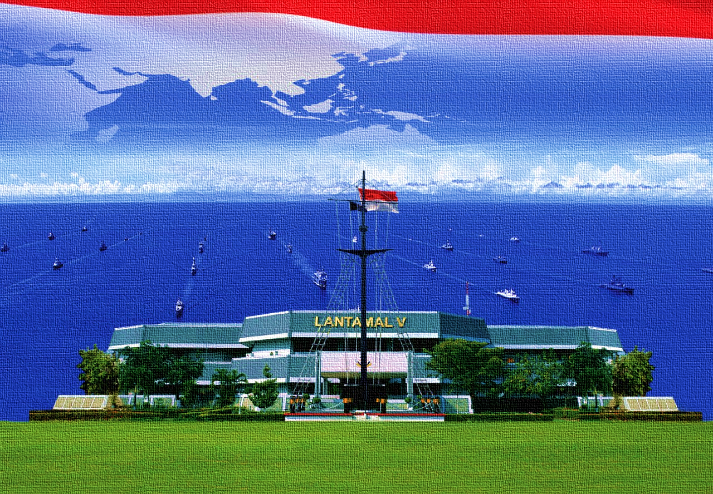

TUPOKSI DISBEK LANTAMAL V
Dinas Pembekalan (disbek) Lantamal V merupakan satuan pelaksana yang bertugas membina dan menyelenggarakan pembekalan sesuai petunjuk pelaks di lingkungan Lantamal V dalam rangka dukungan giat ops Komando Armada II, unsur operasional Lantamal V dan unsur-unsur kotama lainnya yang sedang melaks ops di wilayah Lantamal V.

TUGAS DAN FUNGSI DISBEK LANTAMAL V
- Menyusun dan melaksanakan rencana dan program Pembekalan yang meliputi: pengadaan, penyimpanan, pendistribusian dan penghapusan berdasarkan rencana dan program kerja Pangkalan Utama TNI AL V dan Komando Armada II.
- Mengumpulkan, mengelola data serta memutakhirkan data material bekal untuk menjamin ketepatan dukungan perbekalan.
- Mempertahankan tingkat ketersediaan bekal melalui pengadaan yang seimbang dengan pendistribusian bekal.
- Memelihara kualitas bekal sesuai dengan ketentuan yang berlaku di lingkungan TNI AL.
- koordinasi dan kerja sama dengan Komando, Badan dan Instansi baik di dalam maupun di luar Lantamal V untuk kepentingan pelaksanaan tugas.
- Mengawasi, mengendalikan dan mengevaluasi pelaksanaan, rencana dan program kerja Disbek Lantamal V guna menjamin pencapaian sasaran secara efektif dan efisien.
- Mengajukan pertimbangan dan saran kepada Danlantamal V khususnya mengenai hal-hal yang berhubungan dengan bidang tugasnya.